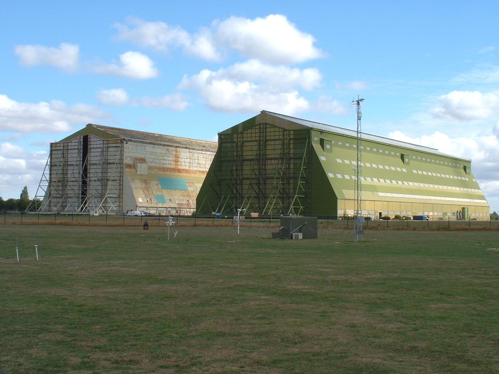
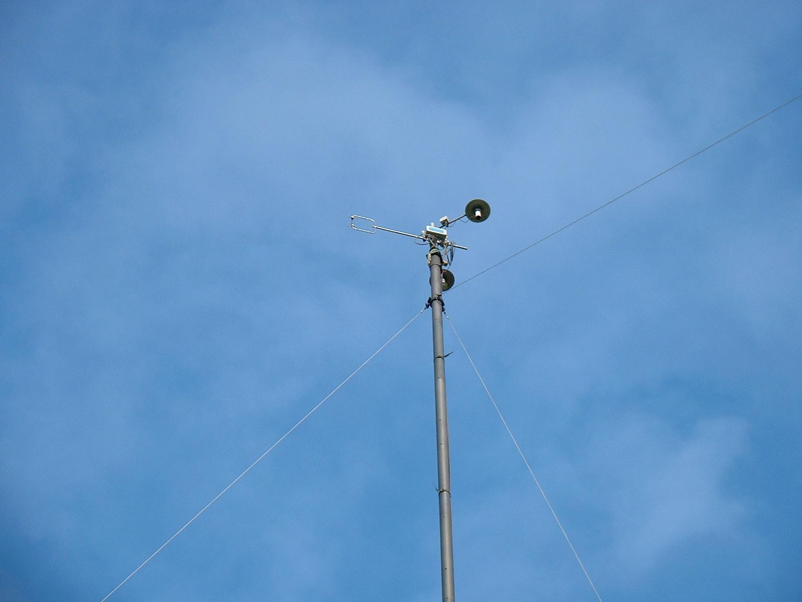
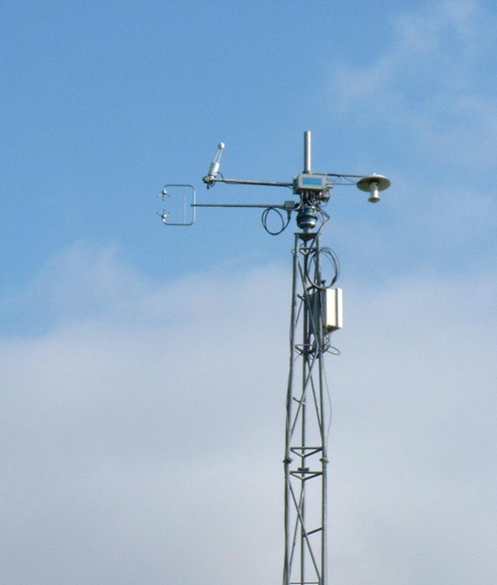
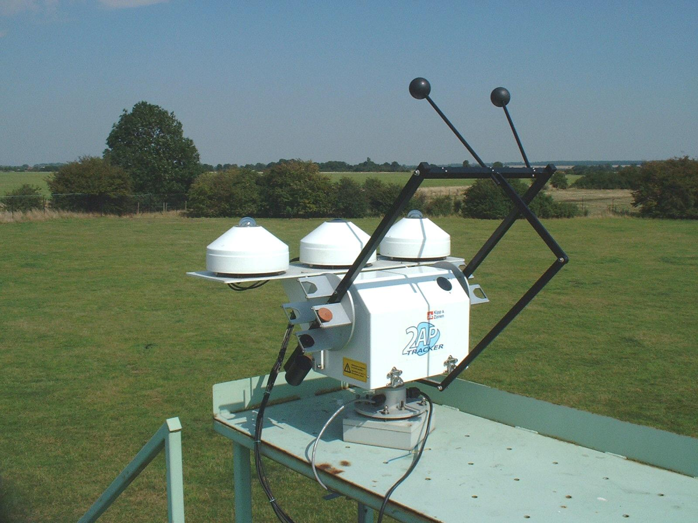
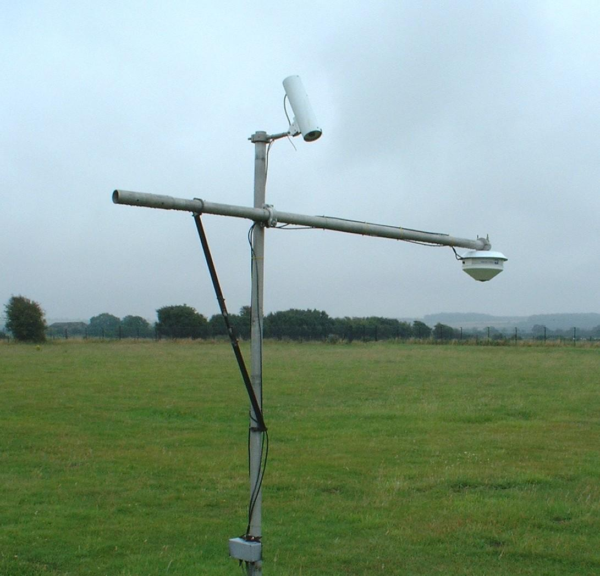

Contents:-
|
NB:
|
The inclusion in this document of the name of a company does not constitute any endorsement
or recommendation by the Met Office of that company's products or services.
|
1. Introduction
The Met Research Unit, located at Cardington in Bedfordshire (52o
06' N, 00o 25' W,
29m amsl), maintains a suite of surface-based and mast-mounted instrumentation.
The main purpose of this instrumentation site, which is logged 24 hours a day, is to provide data for atmospheric
processes research, and for the testing and validation of numerical model
output and performance.
The Cardington site has an open fetch in all directions, with the exception of to the north,
where the presence of two large airship hangars have a major influence on the air flow.
Measurements of turbulence therefore, when the wind is coming from a direction of roughly
355o to 035o, should be treated with
caution.
|

|
|
Cardington airship hangars (with instrumented 10m mast in foreground)
|
2. Instrumentation
This section outlines the instrumentation deployed on the site. More detailed technical descriptions of
some of the instruments are available by clicking on the links.
2.1 Wind and turbulence measurement
- Three Gill Solent HS-50 ultrasonic anemometers, are used for making
fast response wind measurements, which can be used in eddy correlation calculations.
A fast response temperature measurement is also generated. Measurements are made at heights of 10m, 25m and 50m.
|

|
|
Ultrasonic anemometer mounted at the top of the 25m mast.
(Also present: temperature and humidity sensors inside aspirated screens)
|
2.2 Temperature measurement
- Temperature measurements are made using PRT (Platinum Resistance Thermometer) probes.
These are located at four heights :- 1.2m, 10m, 25m and 50m, and are housed in aspirated, shielded screens.
The 1.2m measurement incorporates an SDL probe and an Automatic Systems Laboratories
model F250 high precision temperature bridge. The remaining three sensors are Vector Instruments
model T302 sensors.
2.3 Humidity measurement
- Fast response humidity measurements are made using a
LI-COR LI-7500 open path
CO2/H20 gas analyser, located at the top
of the 10m tower. In addition to measuring water vapour, this instrument is capable of measuring atmospheric carbon
dioxide concentration. When combined with simultaneous data from a sonic anemometer,
humidity and CO2 fluxes can be calculated.
- Three Vaisala humicaps are employed for measurement of relative humidity. These are located at
heights of 1.2m, 25m and 50m and are housed in aspirated screens. Estimates of humidity flux at 25 and 50m
are also made by correlating the humicap outputs with data from the sonic anemometers.
- A Michell Series 3000 dewpoint hygrometer is situated
at a height of 1.2m above ground level. This is mounted inside the 1.2m temperature screen.
|

|
|
This picture shows the LI-COR LI-7500 gas analyser co-located with a sonic
anemometer, on the 10m tower.
|
2.4 Radiation measurement
The surface site consists of a full suite of radiometers, measuring all the main components of the radiation
budget:-
- Three Kipp & Zonen CM21/CM22 pyranometers , are used to
measure global incoming, diffuse, and relected solar irradiances.
The diffuse measurement involves shading the sensor from the direct solar beam using a solar tracker.
- Two Kipp & Zonen CG4 pyrgeometers are used, for
measuring the incoming and outgoing longwave irradiances (with a spectral range of
4.5 to about 40 mm.
- The surface radiative temperature is measured using a Heitronics
KT15D Infrared radiation pyrometer pointed at the ground.
|

|

|
Above: Radiometers mounted on a Kipp & Zonen solar tracker.
Right: Downward-facing pyrgeometer at end of boom, and Heitronics IRT
pointing at the ground.
|
2.5 Visibility & aerosol measurements
- Visibility is measured using a Belfort model 6230A visibility sensor.
- An MRI integrating nephelometer (model 1550B) measures the atmospheric
scattering coefficient of dry aerosols.
2.6 Sub-soil sensors
A number of sub-soil sensors are deployed. These sensors are situated at
two different locations in the Cardington field site (designated the "west" site and the "south" site.):-
- Volumetric soil moisture content measurements are made using
Delta-T ThetaProbes, located at depths of 10cm, 22cm, 57cm and
1.6m below the surface, at both the west and south sites.
- Sub soil platinum resistance thermometer probes measure the soil temperature at depths of
1cm, 4cm, 7cm, 10cm, 17cm, 35cm, 65cm and 1m. (These are located at the south site only.)
- Water table depth below the surface is measured at the west and south sites. This is
obtained using Druck 1830 series pressure transducers, located inside boreholes in the ground.
2.7 Miscellaneous sensors
- A standard Met Office tipping bucket rain-gauge (Mk 5) is used for the
recording of rainfall.
- Barometric pressure is measured to 0.1hPa using a Setra Model 270 transducer (located at a
height of 1.5m above ground level.)
3. Data Logging
The overall structure of the logging system is illustrated in this schematic diagram.
The three sonic anemometers are logged at a rate of 10Hz on a PC running windows XP, using software
developed in-house. The other sensors that are mounted on the 10,25 and 50m masts are connected to the analogue
inputs of the anemometers and are logged in the same data streams. Data from the 25m and 50m sonics is
transmitted to the logging PC, via pairs of radio modems.
All the remaining sensors are logged using three commercially available
dataTaker (www.datataker.com)
DT800 loggers. The loggers use a raw sampling rate of 0.5 Hz, and one minute averaged data is
logged. Another PC running windows XP interrogates these loggers at regular intervals, and downloads the data
from them.
4. Data Processing
The data processing routines output three files per day. These contain data averaged over time periods of
1 minute, 10 minutes and 30 minutes. Turbulence quantities and data from slow response sensors are
included in the 10 minute and 30 minute datasets only.
A full description of the data format, and a list of parameters, can be found here.
Last Modified:- 6th November 2006
By:- james.mcgregor@metoffice.gov.uk
{kind=link}
{kind=link}
{kind=link}
{kind=link}